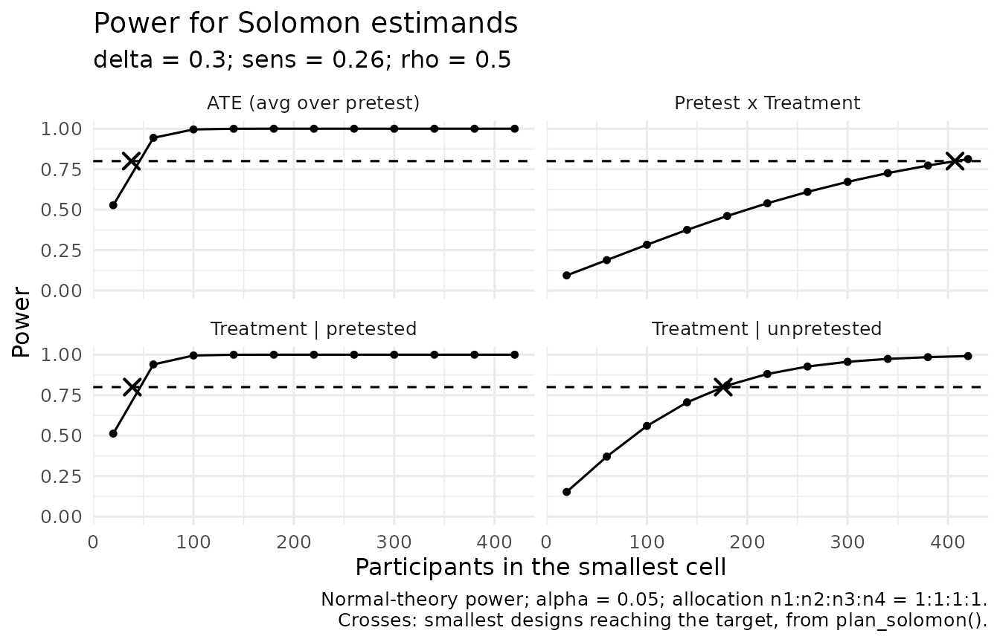

A Solomon four-group study answers three questions: does the treatment work, does pretesting change the outcome, and does pretesting change the treatment’s effect (sensitization)? This article shows how to choose a sample size for each, and where the planning values come from.
What you have to specify
plan_solomon() finds the smallest design whose power
reaches a target for each Solomon estimand. It needs five planning
values:
| Argument | Meaning |
|---|---|
delta |
The treatment effect among unpretested participants |
sens |
Sensitization: the additional treatment effect among pretested participants |
rho |
The pretest–posttest correlation among pretested participants |
sigma |
The posttest standard deviation; with sigma = 1,
effects are in SD units |
allocation |
The relative sizes of the four groups |
The treatment effect among pretested participants is then
delta + sens, and the average treatment effect is
delta + sens / 2. A pretest main effect, which shifts both
pretested groups equally, does not enter the power of any treatment
contrast: the analysis model absorbs it with the pretest indicator.
Planning values from the literature
Pretest effects. The meta-analysis of Willson and Putnam (1982) combined 134 outcomes from randomized studies of pretest effects. Pretesting raised posttest scores by .22 standard deviations on average, by .43 for cognitive outcomes, .29 for attitude outcomes, and .48 for personality outcomes, with other outcomes about zero (p. 249). Pretesting matters, then, even though a main effect of pretesting does not change the sample size needed for the treatment contrasts.
Sensitization. In the same meta-analysis, the pretest effect averaged .13 among treated groups and .39 among untreated groups, a difference that was not statistically significant (p. 252). Read as a Solomon interaction, that is a sensitization effect of about −.26 standard deviations: the treatment worked somewhat less well among pretested participants. Two cautions apply. The figure averages over very different studies and outcomes, and the effect distributions were skewed (p. 252). And a later systematic review of Solomon studies with behavioral outcomes found only sparse evidence of interactions, with too few high-quality studies to settle the question (McCambridge et al., 2011, p. 1). A sensitization of about a quarter of a standard deviation is therefore a reasonable scenario to plan for, not an established value.
The pretest–posttest correlation. These sources do
not supply rho; it depends on the measure and the interval
between pretest and posttest. Use the test–retest reliability of your
measure over a similar interval, and check how much the plan depends on
it (below).
A plan for all three questions
With a treatment effect of 0.30 standard deviations, sensitization of 0.26, and a pretest–posttest correlation of .5 (power depends on the size of sensitization, not its sign, so the magnitude from Willson and Putnam is used):
plan <- plan_solomon(power = 0.80, delta = 0.30, sens = 0.26, rho = 0.5)
plan[, c("estimand", "true_effect", "n1", "n2", "n3", "n4", "total_n", "power")]
#> estimand true_effect n1 n2 n3 n4 total_n power
#> 1 ATE (avg over pretest) 0.43 38 38 38 38 152 0.8036832
#> 2 Pretest x Treatment 0.26 407 407 407 407 1628 0.8001280
#> 3 Treatment | pretested 0.56 39 39 39 39 156 0.8047603
#> 4 Treatment | unpretested 0.30 176 176 176 176 704 0.8013794The average treatment effect needs 152 participants; sensitization
needs 1628. This is not a quirk of these values. The sensitization
contrast is the difference between the two simple treatment effects and
the average treatment effect is their average, so sensitization has
exactly four times the sampling variance of the average treatment
effect, whatever the correlation and allocation
(?plan_solomon). A study powered only for the treatment
effect is usually underpowered for the question the Solomon design
exists to answer.
plot_power_solomon() shows the power curves behind the
plan:
plot_power_solomon(delta = 0.30, sens = 0.26, rho = 0.5, n = seq(20, 420, by = 40))
How much the plan depends on the correlation
rhos <- c(0.3, 0.5, 0.7)
totals <- sapply(rhos, function(r) {
p <- plan_solomon(power = 0.80, delta = 0.30, sens = 0.26, rho = r)
stats::setNames(p$total_n, p$estimand)
})
colnames(totals) <- paste("rho =", rhos)
totals
#> rho = 0.3 rho = 0.5 rho = 0.7
#> ATE (avg over pretest) 168 152 132
#> Pretest x Treatment 1780 1628 1408
#> Treatment | pretested 188 156 108
#> Treatment | unpretested 704 704 704A higher correlation helps the contrasts that use the pretest (the pretested effect, the average, and sensitization) and leaves the unpretested effect unchanged, because the unpretested groups have no pretest.
Allocation
When pretesting is the expensive part of a study, fewer participants
can be pretested. allocation gives the relative group
sizes, in the order pretested treated, pretested control, unpretested
treated, unpretested control:
plan_2to1 <- plan_solomon(power = 0.80, delta = 0.30, sens = 0.26, rho = 0.5,
allocation = c(1, 1, 2, 2))
plan_2to1[, c("estimand", "n1", "n2", "n3", "n4", "total_n")]
#> estimand n1 n2 n3 n4 total_n
#> 1 ATE (avg over pretest) 27 27 54 54 162
#> 2 Pretest x Treatment 291 291 582 582 1746
#> 3 Treatment | pretested 39 39 78 78 234
#> 4 Treatment | unpretested 88 88 176 176 528If pretests are the costly part, count them. With twice as many unpretested as pretested participants, the average treatment effect needs 54 pretested participants instead of 76, and sensitization 582 instead of 814, at the price of more participants in total (162 instead of 152, and 1746 instead of 1628).
Small designs
The analytic plans use normal-theory power. The package’s own
analysis uses HC3 standard errors, which are conservative with 20 or
fewer participants per group, so for small designs
method = "simulation" plans for the test the package
actually runs:
simulated <- plan_solomon(power = 0.80, delta = 0.8, rho = 0.5, estimand = "unpretested",
method = "simulation", sims = 500, seed = 49)
analytic <- plan_solomon(power = 0.80, delta = 0.8, rho = 0.5, estimand = "unpretested")
rbind(analytic, simulated)[, c("basis", "n1", "total_n", "power", "mcse")]
#> basis n1 total_n power mcse
#> 1 analytic 26 104 0.8074866 NA
#> 2 simulation 28 112 0.8440000 0.01622738For a large effect in small groups, the simulated plan needs 28
participants per group against 26 from the normal-theory calculation.
The re-simulation study behind this advice is reported in Designs from plan_solomon(), and the
rejection rates of power_solomon() in Validating power_solomon(); both are
summarized on the Validation
Evidence page.
Writing down the analysis
Once the sample size is set, analysis_plan_solomon()
drafts the analysis plan to register before the outcomes are seen. It
takes the plan_solomon() result, so the planned sample and
its planning values are filled in, and it follows the sections of van ’t
Veer and Giner-Sorolla’s (2016) preregistration template:
sens_plan <- plan_solomon(power = 0.80, delta = 0.30, sens = 0.26, rho = 0.5,
estimand = "sensitization")
draft <- analysis_plan_solomon(
plan = sens_plan,
outcome = "[the primary outcome]",
sensitization = "test"
)
cat(head(draft$text, 12), sep = "\n")
#> # Analysis plan for a Solomon four-group study
#>
#> Drafted with solomonR 0.8.0.9000 on 2026-10-03. Edit every section before registering it; text in square brackets is for the researcher to complete. The sections follow van 't Veer and Giner-Sorolla's (2016) template, and each names the SPIRIT 2013 item it answers (Chan et al., 2013).
#>
#> ## 1. Hypotheses (SPIRIT 12)
#>
#> The primary outcome is [the primary outcome].
#>
#> **H1.** Averaged over the pretest conditions, [the treatment, and the control condition] will raise [the primary outcome] relative to the control condition.
#>
#> **H2.** The treatment effect may differ between pretested and unpretested participants (pretest sensitization). No direction is predicted; the Pretest x Treatment contrast is tested two-sided.The draft names the model, the confirmatory contrasts, the handling
of missing posttests, and a table for deviations. Text in square
brackets is for you to complete. With several posttest occasions
(occasions = 3), the plan uses the repeated-measures model
of fit_solomon_mmrm() instead. Passing the registered plan
to report_solomon(fit, design = list(plan = draft)) lets
the report state that the sensitization analysis was pre-specified.
The historical test sequence
These plans are for the package’s recommended analysis. The package
does not plan for the historical sequence of Tests A–I as a whole, or
for the alpha allocations Sawilowsky (1996) proposed to control its
experiment-wise error. power_solomon(stouffer = TRUE)
reports the rejection rate of Test I alone, and the article Historical Tests: Replicating the
Published Error Rates reports the error rates of the sequence.
All works cited in solomonR are listed, with notes on how the package uses them, on the References page.
References
McCambridge, J., Butor-Bhavsar, K., Witton, J., & Elbourne, D. (2011). Can research assessments themselves cause bias in behaviour change trials? A systematic review of evidence from Solomon 4-group studies. PLoS ONE, 6(10), Article e25223. https://doi.org/10.1371/journal.pone.0025223
Sawilowsky, S. S. (1996, June 23). Controlling experiment-wise Type I error of meta-analysis in the Solomon four-group design [Paper presentation]. First International Conference on Multiple Comparisons, Tel Aviv, Israel. https://digitalcommons.wayne.edu/coe_tbf/29/
van ’t Veer, A. E., & Giner-Sorolla, R. (2016). Pre-registration in social psychology—A discussion and suggested template. Journal of Experimental Social Psychology, 67, 2–12. https://doi.org/10.1016/j.jesp.2016.03.004
Willson, V. L., & Putnam, R. R. (1982). A meta-analysis of pretest sensitization effects in experimental design. American Educational Research Journal, 19(2), 249–258. https://doi.org/10.3102/00028312019002249